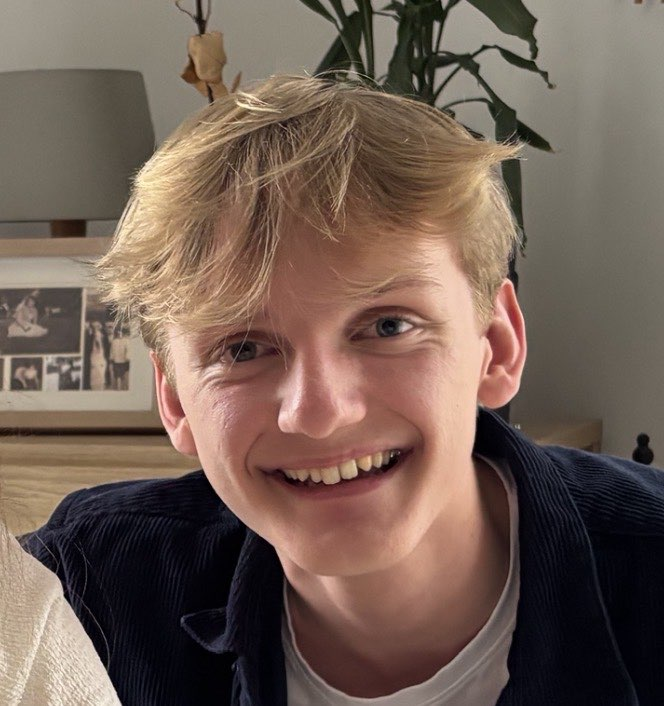

Bonjour, je suis Evan BENOIT
J'ai 17 ans et je suis en première année de BUT Informatique à l'IUT de Lannion. J'ai toujours eu cette curiosité un peu particulière : quand quelque chose m'intéresse, j'ai besoin de comprendre comment ça marche en dessous — que ce soit un jeu vidéo, un logiciel, ou n'importe quel système.
Cette formation me permet d'explorer vraiment les deux faces du métier : la théorie (algorithmes, bases de données, réseaux) et la pratique (projets en équipe, développement, mise en production). En dehors des cours, je nage, je roule, je lis des mangas et je bidouille des petits programmes avec des amis.
Mon objectif après le BUT ? Continuer vers une école d'ingénieurs. Je ne sais pas encore dans quel domaine précis je veux aller — et pour l'instant, j'aime bien l'idée de tout explorer avant de choisir.
Me contacterPourquoi l'informatique ?
Mon père m'a mis devant un ordinateur très tôt, et ça a pas mal compté dans l'histoire. Ce qui m'a vraiment accroché au départ, c'est les jeux vidéo — pas juste y jouer, mais me demander comment c'était fait. Comment un jeu pouvait réagir à ce que je faisais ? Quelle logique se cachait derrière ? J'ai commencé à bidouiller des consoles et des logiciels, juste pour voir.
De fil en aiguille, j'ai réalisé que ce qui me plaisait vraiment, c'était le fait de créer des choses : un programme qui résout un problème, un outil qui aide mes amis, un site qui prend forme depuis zéro. L'informatique, c'est l'endroit où la logique et la créativité se rencontrent — et ça, ça m'a tout de suite parlé.
Mon parcours
BUT Informatique
IUT de Lannion — En cours
Lycée filière générale
Saint-Joseph Bossuet, Lannion
Diplôme du Baccalauréat — Mention Très Bien
Spécialités : Mathématiques et Numérique et Sciences Informatique
Options : Maths Expertes et Sport
Brevet d'Initiation à l'Aéronautique
Aéroclub de Lannion — Mention Très Bien
Collège
Saint-Yves, Tréguier
Diplôme du Brevet — Mention Très Bien
Mes centres d'intérêt
Cliquez sur un centre d'intérêt pour en savoir plus.
Je code des petits outils utiles pour mes amis et moi. Parfois pour répondre à un vrai besoin, parfois juste pour tester une idée. Je découvre encore les langages au fur et à mesure.
Passion depuis l'enfance. J'aime autant les jeux solo immersifs que les jeux compétitifs en ligne — tout dépend de l'humeur. C'est d'ailleurs ce monde qui m'a donné envie de faire de l'informatique.
J'écoute beaucoup de rap et de hip-hop, et je touche un peu au piano — avec plus ou moins de succès. La musique, c'est mon espace de décompression entre deux sessions de code.
Je pratique la natation, le running et le cyclisme. Des sports individuels qui me permettent de me vider la tête et de garder un rythme, surtout en période chargée.
Grand fan de JoJo's Bizarre Adventure, que je suis depuis longtemps. J'aime aussi explorer d'autres mangas et BD au gré des envies, surtout dans les genres SF et fantaisie.
J'aime les deux à égalité. Plutôt attiré par l'action, l'aventure, la SF et la comédie — tout ce qui construit un univers cohérent et réussi à m'embarquer.
Découvrir d'autres cultures, d'autres façons de vivre. C'est une ouverture sur le monde que je considère aussi importante que les études.